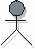

| Artefacto: Actor |
|  |
|
Objetivo
Relaciones
| Artefacto del contenedor | ||
|---|---|---|
| Roles | Responsable: | Modificado por: |
| Tareas | Entrada a: | Salida de: |
| Uso del proceso |
|
|
Descripción
Ilustraciones
| Informes |
|---|
Personalización
| Opciones de representación | Representación UML: Actor
El actor puede tener las siguientes propiedades:
Decida qué propiedades va a utilizar y cómo va a utilizarlas. Concretamente, debe decidir con qué nivel de detalle debe describirse la propiedad "Características". |
|---|
Más información
| Listas de comprobación | |
|---|---|
| Conceptos | |
| Directrices |
© Copyright IBM Corp. 1987, 2006. Reservados todos los derechos. |